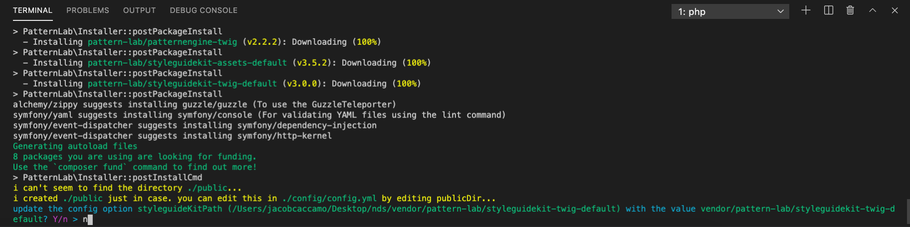
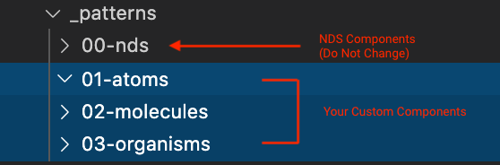
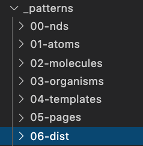
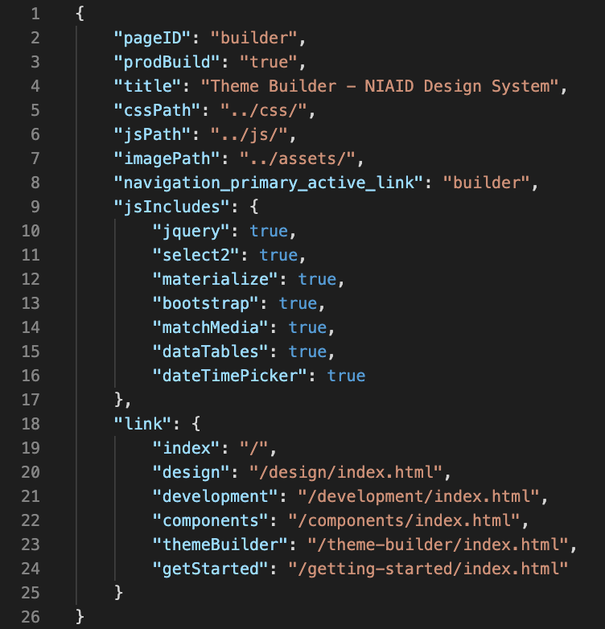
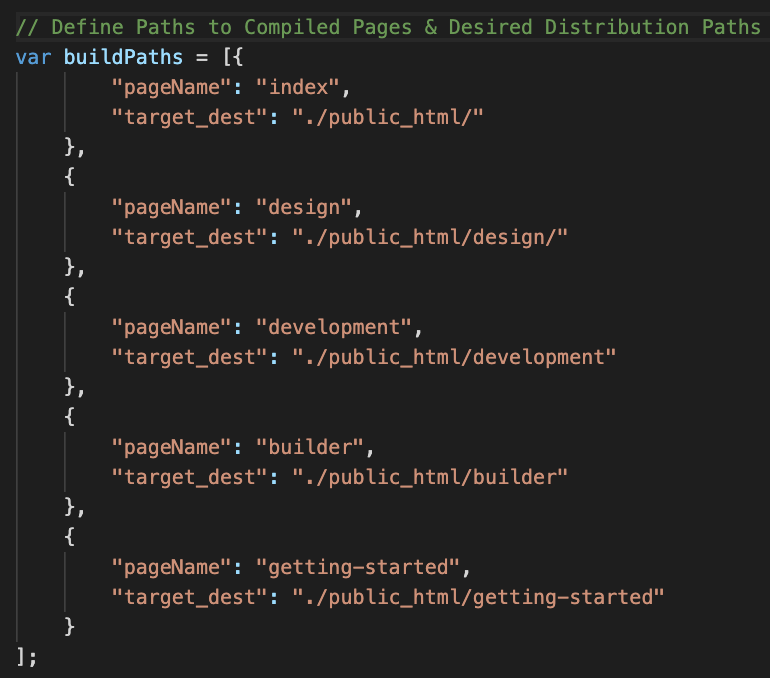

Static Site Builder
With the NIAID Design System Static Site Builder, creating a responsive and compliant website is quick and easy. The Static Site Builder leverages a technology called Pattern Lab to manage web components and the content.
Use the Static Site Builder if:
- Your website needs to be built quickly.
- Your website is small with relatively static content.
- Your team lacks signficant development resources.
- Your team has basic knowledge of HTML, CSS, JS.
Prerequisites
In addition to a basic understanding of HTML, CSS, JS, you’ll need several application packages to work with the Static Site Builder. You can download and install the necessary packages below:
Pattern Lab
The NDS Static Site Builder is built with Pattern Lab, a development framework architected on the principle of Atomic Design. While this technology was originally built to showcase UI web components, Pattern Lab can also be leveraged to intuitively manage and generate complete static websites. The Static Site Builder consists of an instance of Pattern Lab coupled with NDS components and assets to allow you to quickly build your website. While we have written this guide to be effective even if you do not have Pattern Lab experience, we encourage you to familiarize yourself with the documentation on the Pattern Lab website. Additionally, we have provided more information about the organization of the Pattern Lab directory on the Development page.
Initialization
1. Download the Static Website Package:
2. Unzip and Open the Directory in Your Preferred Code Editor.
Editors like Visual Studio Code are free to download and provide many features that make development easier.
3. Install Node and Composer Dependencies
Open a new terminal and change into your project directory. If using Visual Studio Code, you may select Terminal -> New Terminal from the application bar. Run the followung commands to install the needed dependencies:
npm installcomposer installNote: When you run composer install there may be a prompt asking if you want to install a default theme. Type n and hit enter.

Do not install the default theme when prompoted by typing "n" and hitting enter.
Credit:
NIAID
4. Open the Project on Your Localhost
In your terminal, run:
gulpThis will compile your project and create a localhost with your patterns and pages. Use the black bar at the top to navigate to your components.
Working with NDS
Whether you are building a static site or a Drupal site, once your project is setup, you can begin to add pages, make new components, and make customizations. All NDS out-of-the-box components live in the 00-nds directory inside of the _patterns/ folder. For Drupal-based projects, the _patterns/ folder is located under the ./nds directory. If custom components, style rules, or functionality are needed, do not make changes inside the 00-nds directory, as this folder may get updated and overwritten. If you need to make your own custom components, place them in the appropriate Atomic folders outside of the 00-nds directory.

Custom components should be placed in the Atomic folders outside of the 00-nds/ directory.
Credit:
NIAID
The global project CSS rules can be found in the css/ directory in source/. The global/ folder is similar to the 00-nds/ folder in that custom changes should not occur within the directory. Instead, make edits in the overrides/ directory. Here, you can create new files and write custom style rules.
For both static and Drupal-based websites, the CSS and JS will need to be compiled before it is reflected on the site. Run the following commands depending on your project type:
Static Websites:
gulpDrupal Websites:
cd ndsgulpRunning the gulp command will compile the project assets and produce a localhost with your Pattern Lab styleguide. Note that the Gulp script is configured to watch files and listen for changes. When changes are detected, Gulp will automatically recompile your assets and refresh the localhost, so that you may verify your changes look correct.
For Drupal-based projects, you may need to clear the Drupal cache to see your changes.
Building NDS for Production
When you are satisfied with your site, the Static Site Builder allows you to build a distribution folder (public_html/) with all the necessary, web-ready assets. The steps below explain how to generate your distribution code.
1. Create a Distribution Pattern Folder.
Start by creating a 06-dist/ folder under _patterns/ (source/_patterns/06-dist/).

Create a 06-dist/ directory.
Credit:
NIAID
For each page of your static site, create a new folder (typically with the same name as the corresponding 05-pages/ directory) and add a twig file, such as design.twig, and a JSON file with the same name, such as design.json.

Use the JSON file in the 06-dist/ page folders to make configurations for production pages.
Credit:
NIAID
2. Configure the Production JSON Files
The JSON file in each page's 06-dist folder is critical for defining production-specific information, including the paths for your CSS, JS, and image assets, page titles, and included scripts.
- Configure the variable paths (cssPath, jsPath, etc.) to your desired structure.
- Include or exclude certain JS libraries from the build by setting 'true' or 'false' values, respectively.
- If using an NDS-based navigation element, use the "navigationPrimaryActiveLink" parameter to add active page styling.
You may also add your own parameters for use in custom patterns.
3. Configure Gulp Paths to Your Production Pages
Once your 06-dist/ directory is setup, compile Pattern Lab. Next, open your gulpfile.js, and find the "buildPaths" variable declaration. For every page you want to deploy, add a new object. For pageName, add the name of the folder/file for that page in 06-dist/. For target_dest, specify the ultimate path you want that page to file under.

A sample buildPaths variable declaration.
Credit:
NIAID
4. Build the Distribution Directory
gulp buildProdAfter running the buildProd command, a public_html/ directory will be created with production ready assets. Upload the contents of this directory to your hosting platform.